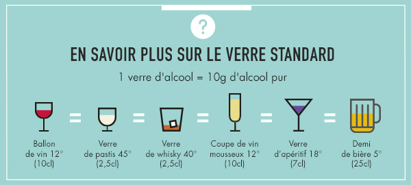

"Un jour, on te dit que reprendre un verre d'alcool ce serait comme aller se baigner sans savoir nager. Quand on sait qu'on va se noyer, on réfléchit.", Jacques Dutronc.
Le bar est un lieu servant principalement des boissons alcoolisées. Il est proche du café. Les gens qui servent ici sont appelés «barmans» ou «serveuses». Il est généralement placé derrière un long meuble, également appelé "bar" ou "comptoir". La caractéristique du bar est l'atmosphère. A partir de bistrots français, belges ou suisses très classiques, certains propriétaires de bars peuvent choisir de créer une ambiance particulière pour leur établissement. Ils peuvent être inspirés par des concepts étrangers, pubs, maquis et autres. Ils peuvent également assortir le mobilier ou la musique pour créer une atmosphère "décontractée", pour se détendre dans un environnement confortable. Si d'autres lieux eux-mêmes ne sont pas intégrés dans les locaux de l'hôtel, ils fourniront également des services hôteliers. Il peut être combiné avec des activités de café, nous avons affaire à des cafés-bars. Certains bars proposent des animations comme des chanteurs, des musiciens, des comédiens, des spectacles sexy ou des strip-teaseuses (voir clubs de strip-tease). Il peut être également combiné avec des activités de café, nous avons affaire à des cafés-bars. En France, les bars sont appelés "débits de boissons" et peuvent être consommés sur place. Ils doivent obtenir une autorisation municipale appelée permis (ou municipalité de Paris), et le niveau de leurs besoins varie en fonction du type de boisson vendue. Par conséquent, le gérant du bar doit détenir une licence pour vendre des boissons sur place (distincte de la licence du restaurant). L’article L.3331-1 du code de la santé publique distingue ainsi entre deux types de licences : La Licence III, dite licence restreinte : vin de liqueurs, apéritif à base de vin, liqueur de fruits comprenant moins de 18° d’alcool. La licence IV ou grande licence : rhum et alcool distillé. Depuis 1960, le nombre de bars en France a fortement diminué, en particulier dans les zones rurales, bien qu'il ait joué un rôle important dans le processus de socialisation rurale, il est tombé à 34 000 contre 600 000 en 2016. Cela a conduit à constater que 7 000 bars ferment chaque année en France